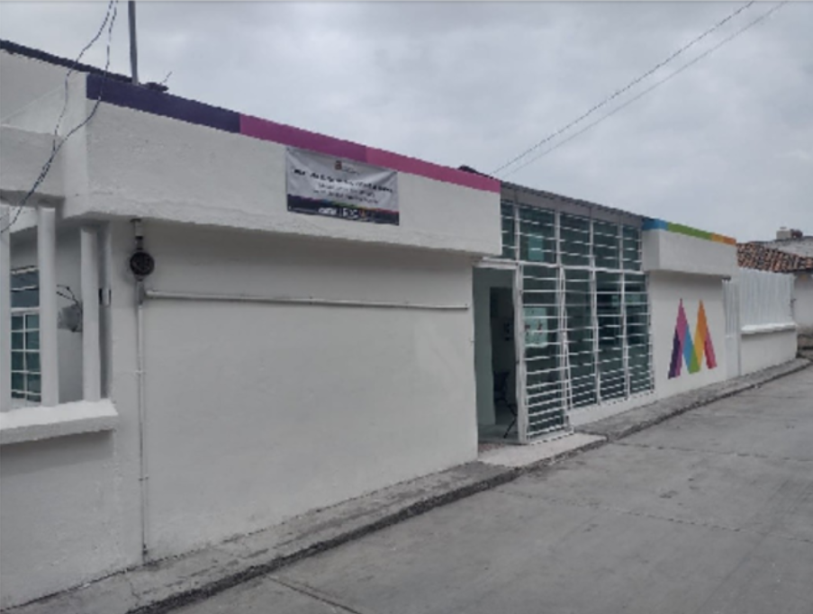

En la comunidad de Santa Cruz Tepexpan, el sitio donde actualmente se encuentra la clínica, tenia una historia muy diferente. Unos años atras
ese
mismolugar funcionaba como una escuela, que con el tiempo se convirtio en la actual Escuela "Justo sierra". A un costado también se encontraba
la
antigua delegación,punto de encuentro para los asuntos comunitarios.
Tras el paso de los años la escuela y la delegación fueron destruidas, sobre las ruinas, en el año 1967 aproximadamente comenzo la construcción
de la
clínica que mas tarde se convertiria en lo que actualmente es, un centro de atención médica para la comunidad.
Anteriormente, existia en la comunidad una casa de salud que ofrecia atencion medica a la población de Tierra Blanca y la Sección de Cerrito,
aunque
esta casa de salud dejo de operar, estas comunidades aun se encuetran anexadas al centro de salud Santa Cruz Tepexpan, por lo que los habitantes
siguen siendoatendidos ahí. Asi la población adscrita a la unidad médica actual incluye a todos nucleos básicos
Este hospital no solo muestra un avance en infrestructura, sino tambien una pieza clave en la historia y el desarrollo de los servicios de salud para
la región
|  |